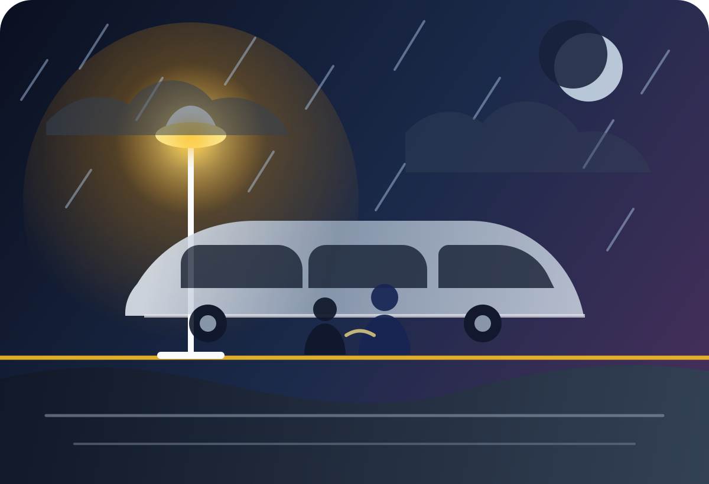

The Last Train Home
Written as an original short story for an interactive reading experience.
Interactive Storybook
Turn each page and follow Adam through a stormy night, a delayed train, and a quiet return to the person who never stopped waiting.

Written as an original short story for an interactive reading experience.
When Adam arrived at the station, the sky was already turning dark. Heavy clouds covered the city, and a cold wind pushed old newspapers across the empty platform. He looked at the large clock above the ticket office: 10:47 p.m. The last train to his hometown would leave in thirteen minutes.
Adam had not visited his mother for almost two years. At first, he had been too busy with university. Then he had found a job in the city, and every week he told himself the same excuse: I will go next weekend.
But next weekend always became another weekend, and another, until the distance between them felt bigger than the road itself.
He bought a ticket from the machine and sat on a metal bench. The station was almost silent, except for the sound of rain beginning to fall against the glass roof. A few people were waiting nearby: an old man holding a small brown suitcase, a young woman reading a book, and a boy who kept staring at the train tracks as if he expected something magical to appear.
Adam took out his phone. There were three missed calls from his mother. He had ignored them earlier because he was in a meeting. Now, looking at her name on the screen, he felt ashamed. He pressed the call button.
She answered after the first ring.
“Adam?” Her voice sounded tired, but warm.
“Hi, Mom,” he said quietly. “I’m at the station. I’m coming home.”
For a few seconds, she said nothing. Then he heard her laugh softly.
“You finally remembered the way?”
Adam smiled, but his eyes burned.
“I never forgot. I just… kept delaying it.”
“That is almost the same thing,” she replied, but her voice was gentle.
Before Adam could answer, the lights in the station suddenly flickered. A loud announcement filled the platform.
“Attention, passengers. Due to technical problems caused by the storm, the 11:00 train has been delayed.”
People began to complain. The old man sighed. The young woman closed her book. Adam looked at the tracks, feeling the old frustration rising inside him. Part of him wanted to go back to his apartment, sleep, and try again another day.
But then his mother spoke through the phone.
“Are you still there?”
“Yes,” he said.
“Good. Then wait.”
It was such a simple sentence, but it struck him deeply. Wait. He realized that his mother had been waiting for him for two years without complaining. She had waited through missed calls, short messages, forgotten birthdays, and empty promises.
So Adam waited.
The delay lasted forty minutes. During that time, the old man sat beside him and began talking. He was going to visit his daughter, who had just had a baby. The young woman offered Adam a piece of chocolate from her bag. The boy, who had been staring at the tracks, explained that he loved trains because they always knew where they were going.
Adam laughed at that.
“I wish people were like trains,” he said.
The boy looked at him seriously.
“Maybe they are. They just stop too often.”
Finally, the train arrived, shining through the rain like a long silver shadow. Adam stepped inside and found a seat by the window. As the train moved away from the city, he watched the lights disappear behind him.
For the first time in a long while, he did not feel trapped by time. He felt as if he had chosen the right direction.
When he reached his hometown, it was past midnight. The station was small, quiet, and familiar. His mother was standing under a yellow lamp, wearing the same blue coat she had worn for years. She looked older than he remembered, and that hurt him more than he expected.
Adam walked toward her slowly.
“I’m sorry,” he said.
She did not answer immediately. She simply opened her arms.
And in that moment, Adam understood something important: sometimes forgiveness does not arrive with big speeches. Sometimes it arrives silently, in the shape of someone who kept waiting, even when they had every reason to stop.
© 2026 ghalima mohamed. Designed by ghalima mohamed. All rights reserved.
Use the buttons, keyboard arrows, or swipe on mobile.